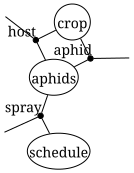
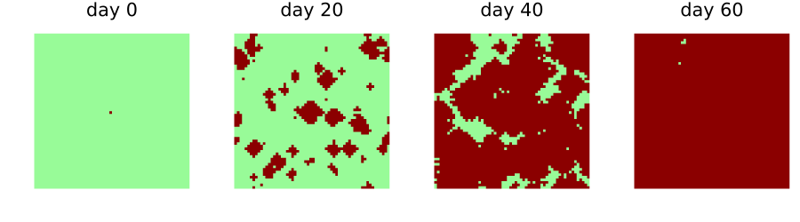
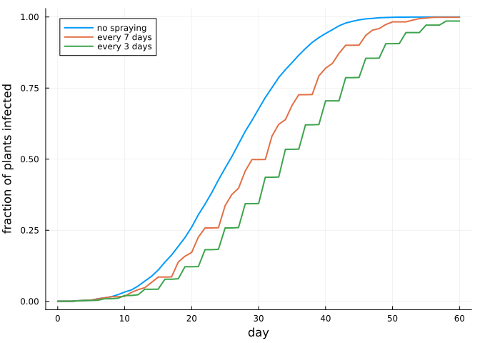

Composing models over shared layers
Simon Frost
Overview
A field model is often written by several people: one models the crop, another the vector, a third the spraying programme. Each part is a CellularAutomataCore model of its own, with its own state layers, parameters and random numbers. This vignette composes such models along an undirected wiring diagram. Boxes are models, junctions are shared layers, and the composite is again a CAModel that runs on any backend.
The construction applies the product theorem of the earlier vignettes to whole models. The composite updates every layer at once, and is the pairing of each model’s update of the layers it owns. Composing models this way is a research extension beyond the papers, in the spirit of the resource sharers of AlgebraicDynamics.jl.
ENV["GKSwstype"] = "100"
using CategoricalCellularAutomata
using Catlab: Catlab, @relation, to_graphviz
using CellularAutomataCore: CellularAutomataCore, @camodel, CAProblem, Torus, solve, states,
defaults, bernoulli, VonNeumann
using Plots
using StatisticsThree models
The crop: a healthy plant (0) is infected (1) with probability β when two or more aphids are on it. It reads the aphid layer but does not change it.
crop = @camodel Crop begin
@states host::Int8 = 0 aphid::Int8 = 0
@parameters β = 0.5
@neighbourhood VonNeumann(1)
@rule begin
infected = cell.host == 1 || (cell.aphid >= 2 && bernoulli(ctx, β, 1))
(host=Int8(infected), aphid=cell.aphid)
end
endCAModel Crop
states:
host::Int8 = 0
aphid::Int8 = 0
parameters:
β = 0.5
rule: LocalRule(<anonymous function>, VonNeumann(1))The aphids breed to density 3 on infected plants and spread from crowded cells, losing one level as they move. A few fly in from outside, and a spray kills them all where it is applied.
aphids = @camodel Aphids begin
@states host::Int8 = 0 aphid::Int8 = 0 spray::Int8 = 0
@parameters immigration = 0.002
@neighbourhood VonNeumann(1)
@rule begin
a = if cell.spray == 1
Int8(0)
elseif cell.host == 1
Int8(3)
else
spread = max(cell.aphid, maximum(n.aphid for n in nbrs)) - 1
Int8(max(spread, bernoulli(ctx, immigration, 1) ? 2 : 0))
end
(host=cell.host, aphid=a, spray=cell.spray)
end
endCAModel Aphids
states:
host::Int8 = 0
aphid::Int8 = 0
spray::Int8 = 0
parameters:
immigration = 0.002
rule: LocalRule(<anonymous function>, VonNeumann(1))The spraying programme sprays every field cell on one day in every.
schedule = @camodel Schedule begin
@states spray::Int8 = 0
@parameters every = 7
@neighbourhood VonNeumann(1)
@rule Int8(ctx.t % every == every - 1)
endCAModel Schedule
states:
spray::Int8 = 0
parameters:
every = 7
rule: LocalRule(<anonymous function>, VonNeumann(1))The diagram
Catlab’s @relation writes the wiring: each model is a box, listed with the layers it shares, and each shared layer is a junction.
field = @relation (host, aphid, spray) begin
crop(host, aphid)
aphids(host, aphid, spray)
schedule(spray)
end
to_graphviz(field; box_labels=:name, junction_labels=:variable)
Each box is an OpenCAModel: a model, the layers it exposes as ports (in the order of the box’s ports), and the layers it reads without updating. Every layer must have at most one model that updates it: the crop owns host, the aphids own aphid, and the schedule owns spray.
boxes = (crop=OpenCAModel(crop; reads=[:aphid]),
aphids=OpenCAModel(aphids; reads=[:host, :spray]),
schedule=OpenCAModel(schedule))
model = oapply(field, boxes; name=:Field)CAModel Field
composite of crop, aphids, schedule
states:
host::Int8 = 0
aphid::Int8 = 0
spray::Int8 = 0
parameters:
crop = (β = 0.5,)
aphids = (immigration = 0.002,)
schedule = (every = 7,)
rule: LocalRule(crop + aphids + schedule, Offsets((0, -1), (-1, 0), (1, 0), (0, 1)))The composite is an ordinary CAModel. Its states are the junctions, and its parameters are those of each box, under the box’s name:
([s.name for s in states(model)], defaults(model))([:host, :aphid, :spray], (crop = (β = 0.5,), aphids = (immigration = 0.002,), schedule = (every = 7,)))Running it
space = Torus(60, 60)
host0 = zeros(Int8, 60, 60)
host0[30, 30] = 1
sprayed = solve(CAProblem(model, (host=host0,), 60; space, seed=1); saveat=20)
plot([heatmap(u.host; c=[:palegreen, :darkred], clims=(0, 1), colorbar=false,
aspect_ratio=:equal, framestyle=:none, title="day $t")
for (t, u) in zip(sprayed.t, sprayed.u)]...; layout=(1, 4), size=(900, 250))
The same models without the spraying programme are another diagram. Its spray layer has no model to update it, so it keeps its initial state, zero: no spraying.
unsprayed_field = @relation (host, aphid, spray) begin
crop(host, aphid)
aphids(host, aphid, spray)
end
unsprayed = oapply(unsprayed_field, (crop=boxes.crop, aphids=boxes.aphids))CAModel composite
composite of crop, aphids
states:
host::Int8 = 0
aphid::Int8 = 0
spray::Int8 = 0
parameters:
crop = (β = 0.5,)
aphids = (immigration = 0.002,)
rule: LocalRule(crop + aphids, Offsets((0, -1), (-1, 0), (1, 0), (0, 1)))Parameters are set per box. Here the programme sprays every 7 days, every 3 days, or not at all:
infected(sol) = [mean(u.host) for u in sol.u]
runs = ["no spraying" => solve(CAProblem(unsprayed, (host=host0,), 60; space, seed=1)),
"every 7 days" => solve(CAProblem(model, (host=host0,), 60; space, seed=1)),
"every 3 days" => solve(CAProblem(model, (host=host0,), 60, (schedule=(every=3,),);
space, seed=1))]
plot(; xlabel="day", ylabel="fraction of plants infected", legend=:topleft)
for (label, sol) in runs
plot!(sol.t, infected(sol); label, lw=2)
end
current()
Who updates a layer
Two models that both update the same layer cannot be composed, because their updates would race. A second crop model that also updates host is refused:
field2 = @relation (host, aphid, spray) begin
crop(host, aphid)
blight(host, aphid)
aphids(host, aphid, spray)
end
try
oapply(field2, (crop=boxes.crop, blight=OpenCAModel(crop; reads=[:aphid]),
aphids=boxes.aphids))
catch err
sprint(showerror, err)
end"LayerConflictError: layer host would be updated by crop and blight; declare it in `reads` for all but one of them"Random numbers per model
Each box draws its own random numbers, from a seed derived from its name, so the crop and the aphids, which both use draw number 1, are independent. This is the independent coupling of the stochastic vignette. With shared_randomness=true the boxes see the same uniforms, which couples them: the crop’s infection draw and the aphids’ immigration draw at a cell become the same number, so aphids fly in only where an infection draw would also succeed. Whether that matters is a question about the model. Here it does not matter much, as the fraction infected on day 30 over 20 seeds shows:
shared = oapply(field, boxes; shared_randomness=true)
day30(m) = [mean(solve(CAProblem(m, (host=host0,), 30; space, seed);
save_everystep=false).u[end].host) for seed in 1:20]
summary(v) = (mean=round(mean(v); digits=3), sd=round(std(v); digits=3))
(independent=summary(day30(model)), shared=summary(day30(shared)))(independent = (mean = 0.582, sd = 0.054), shared = (mean = 0.571, sd = 0.06))The two means differ by less than their standard errors. Immigration is rare, and an immigrant aphid only matters at a later step, through draws that are not shared. The default keeps the boxes’ randomness apart, so that composing two models never couples them by accident, and the option makes coupling a choice that can be tested, as here.